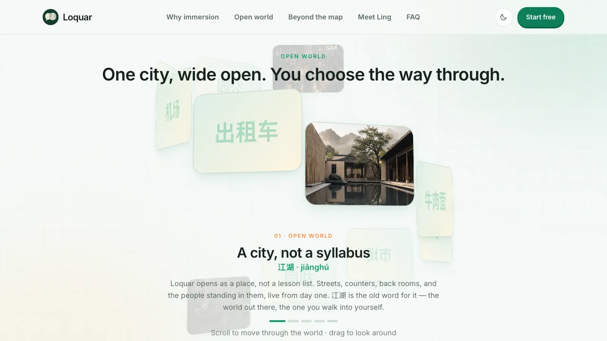

Loquar
A language-learning web app that teaches through conversation in an open world
Status. Loquar is in development. The screenshots on this page are of the landing page, not the finished product, and there is no release date.

Problem
Most language apps teach from a lesson list. I grew up speaking Mandarin at home, and I learned it by needing it: the words arrived with the situations that required them. Loquar is built on that idea. Put the learner in a place where the language is necessary, give them a companion to speak to, and let the language come from what they are trying to do.
Approach
Loquar is an open world rather than a sequence of story events. The product opens as a city, not a syllabus: streets, counters and back rooms, with the people standing in them, and the learner chooses the way through. Every scene is meant to move the language and the reading of the culture together: words, tones and listening on one side; who orders, who pays and when “maybe” means no on the other.
We started with Mandarin because it is the language we can judge. The full product ships when it is ready.
Early concepts
Wireframes and the concepts we rejected will be added here once they can be shown.
Interaction system
On the landing page the world is wound into a spiral: scrolling walks through it and dragging looks around. A progress line under each scene shows where the learner is in the sequence, and each scene carries the word it teaches, in characters and pinyin, before the description of what the scene is for.

Visual design
The landing page sets photographs of real places and people into a paper-toned field, with a serif for the headlines and Chinese characters given room to sit large on their own cards. Product screens will be added here when they can be shown.
Implementation
I am responsible for implementing the systems, the interface and the code, and for the small things that make an app pleasant to use. Details of the stack will follow when the product ships.
Iterations
Iteration notes will be added as the product moves toward release.
Current state
In development. The landing page is public; the full product ships when it is ready, and no release date has been announced.